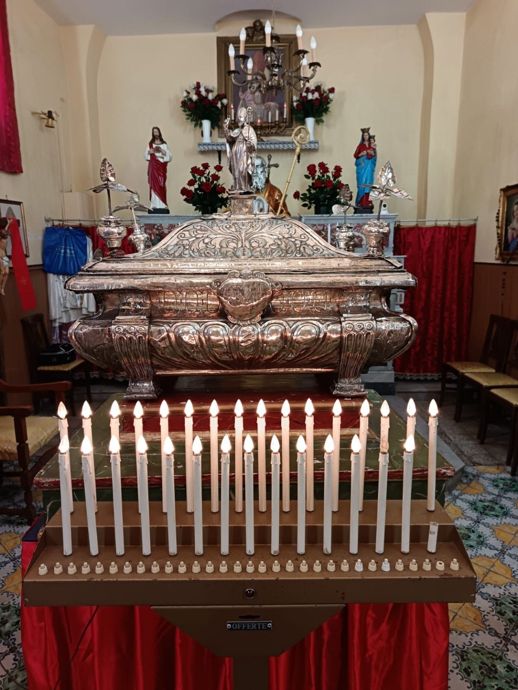

← Attività
1 settembre 2025 · Peregrinatio Corporis
Il ritorno dopo 848 anni.
Il ritorno dopo 848 anni.
L’urna di San Castrese a Marano.
Il 1° settembre 2025 le sacre spoglie di San Castrese tornarono in Campania dopo 848 anni. Durante la storica Peregrinatio a Marano, l’urna sostò anche nella sede dell’Associazione San Castrese in Via Casalanno 1: un momento custodito nella memoria dei soci e della città.
1 settembre 2025arrivo a Marano
848 annidal trasferimento delle sacre spoglie fuori dalla Campania
Via Casalanno 1sosta nella sede associativa

Memoria fotograficaImmagini che documentano
Immagini che documentano
un momento vissuto.
La documentazione fotografica conserva la presenza dell’urna all’interno della sede e il legame tra le sacre spoglie, l’Associazione e la memoria cittadina.
Le fotografie appartengono all’archivio dell’Associazione San Castrese e documentano attività e momenti vissuti dalla comunità.